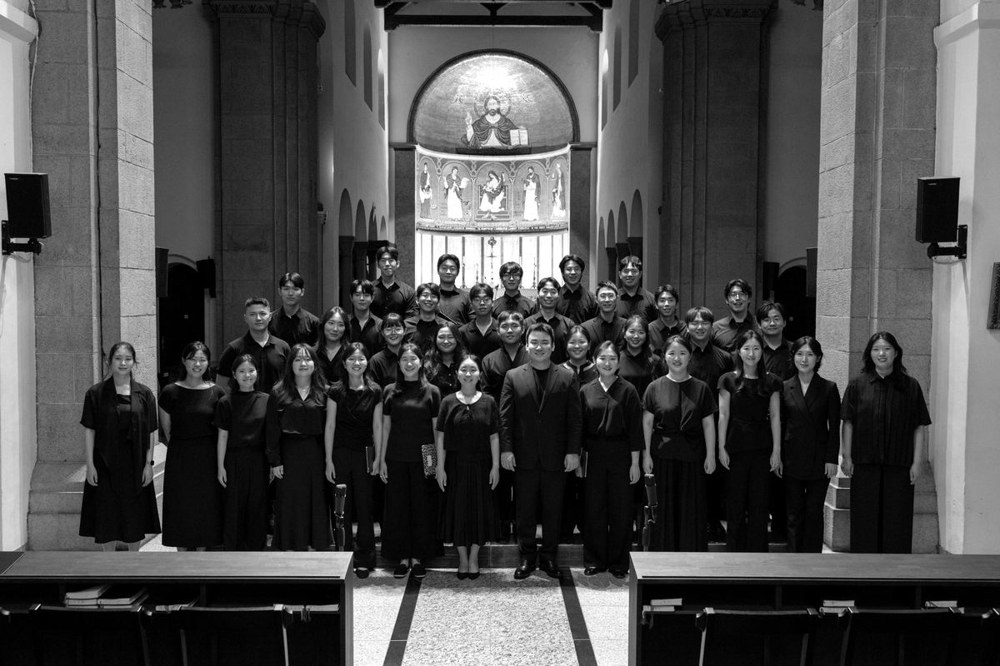

252026.06Jun 2026
네 번째 이야기The fourth story
마주보는 울림 · Resonance in Dialogue
복합창 작품을 중심으로 구성한 연주회. 두 합창단이 마주 보고 노래했습니다.A concert built around polychoral works, with two choirs singing face to face.

참여 아티스트Participating artists
- 이신행음악감독·지휘
- 강은총
- 김동호
- 김명준
- 김수민
- 김시온
- 백인재
- 신지원
- 안하영
- 안형준
- 양성열
- 양현주
- 이미선
- 이하형
- 이호영
- 전은배객원 지휘
- 조한을
- 최승주
- 한하영
- 강은재
- 김은주
- 김정민
- 김정우
- 김지윤
- 문지용
- 박건웅
- 박인규
- 박혜진
- 설수인
- 안유빈
- 유정민
- 이나영
- 진수빈
- 양찬영피아노
YouTube에서 보기Watch on YouTube
연주곡Program
- Part I
- Reena Esmail Take What You Need
- Felix Mendelssohn Bartholdy Heilig, WoO 27
- Tomás Luis de Victoria Kyrie from Missa Salve Regina
- Uģis Prauliņš Laudibus in Sanctis
- Jonathan Dove Adieu! Farewell Earth's Bliss!; Ring Out, Wild Bells, from The Passing of the Year전은배(지휘), 양찬영(반주)Eunbae Jeon, conductor · Chanyoung Yang, collaborative accompanist
- 휴식Intermission
- Part II
- Paul Crabtree Death and Resurrection from The Valley of Delight
- Josef Gabriel Rheinberger Abendlied, Op. 69, No. 3
- Rheinberger Messe in Es, Op. 109, "Cantus Missae"Kyrie · Gloria · Credo · Sanctus · Benedictus · Agnus Dei
- Tim Brent Peace Song (Beatitudes)박윤호(젬베), 한하영, 진수빈, 강은총, 김동호, 안형준(5중창)Yunho Park, djembe · Quintet: Hayoung Han, Subin Jin, Eunchong Kang, Dongho Kim, Hyungjun Ahn
- 앙코르Encore
- Tate Ready for Joy
주최 VOX AMICIS · 후원 Colgate University. 본 공연은 Colgate University Research Council, Faculty Development Council Major Grant, Arts and Humanities Division Grant의 지원으로 제작되었습니다.Presented by VOX AMICIS, supported by Colgate University. Produced with grants from the Colgate University Research Council, the Faculty Development Council Major Grant, and the Arts and Humanities Division Grant.